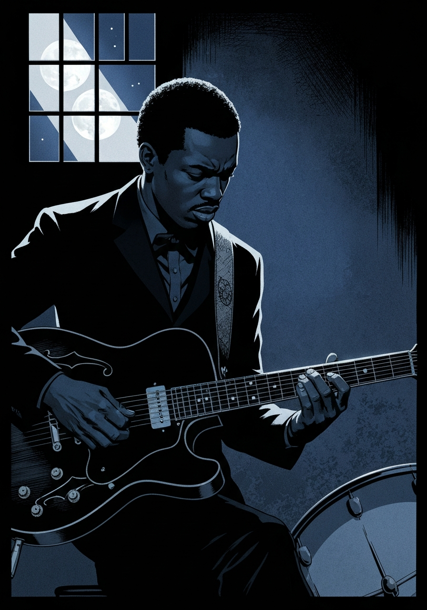
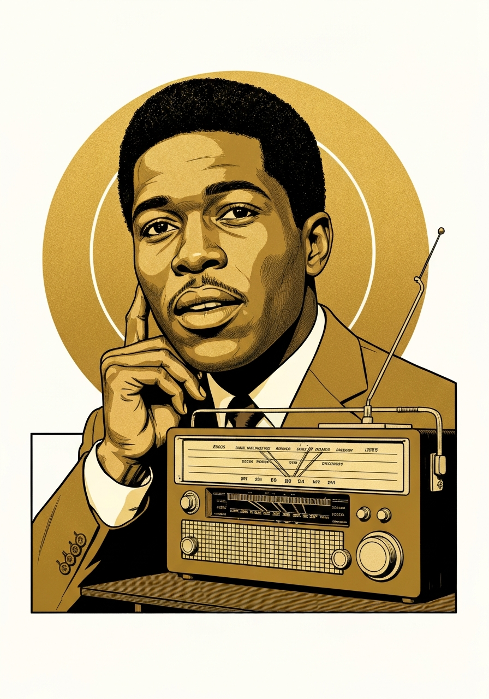

The first AI platform built to encode an artist's identity, protect her legacy, and enforce chain of title — from the first pixel to the last performance.
This Is Me... Now was a $20M statement about herself, released into a cultural moment that was demanding accountability and community. The tour cancellation. The Affleck spectacle. Gen Z's verdict: she lost the thread.
The original thread was always attribution, community, roots. Jenny from the Block wasn't a marketing position — it was a practice. She named Selena. She named Fania Records. She named the Bronx. She practiced chain of title before it was a system.
Artiquity is not a vanity project. It is the infrastructure that makes what she always did — credit her sources, protect her story, trace her lineage — technically enforceable at scale.
Leading a movement for other artists is the reputation reset. Building the system that protects Bad Bunny, Shakira, and every uncredited Latin musician is the return to the block. It's not a rebrand. It's going home.
AI training data scraped reggaeton, cumbia, and corridos disproportionately. These artists need attribution infrastructure more urgently than anyone. JLo is the natural convener — the bridge between legacy Latin pop and the new Latin urbano generation.
30-year catalog, crossover proof, chain of gratitude as lifelong practice. The case study Artiquity was built on.
Most streamed artist globally 2020–2022. Same AI scraping exposure. New generation's voice — his participation makes this cross-generational.
Super Bowl LIV co-headliner. Both face identical AI attribution challenges. Already shares stage with JLo — natural founding partner.
Retired 2023, massive catalog actively being scraped. Retirement gives him the platform to lead policy without career risk.
Harvey Mason Jr., congressional reach, Grammy credibility. This is "who else is in" — the answer Benny needs in the room.
Chain of title for creative IP. Every AI-generated derivative traces back to the origin. Style governed by the artist's rules, not the platform's.
Every panel of the Clarksdale Series — a 15-episode blues history graphic novel — was generated, attributed, and chain-of-titled from creation. The artist's visual language, the historical record, the cultural provenance: all encoded and traceable.
This is what Artiquity does for a blues history graphic novel. Imagine what it does for 30 years of JLo.

